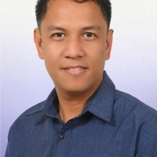

University Profile
Dioses University of Technology and Science (D.U.T.S.) is the first and only premier private university that has free tuition in the Philippines, as it is completely funded by its founder, Professor Raymund Dioses. It was founded in December 22, 2021 with the intention of helping students reach their full potential in technological excellence, thereby advancing the progress of the country's industry.
DUTS is also the only university in the Philippines that has a 100% passing rate in midterms and finals exams of its students. As of 2022, it has also produced five students that are competent in the field of technology, and are active contributors to the advancement of the nation. Aside from this, these five students are also coincidentally the only five staff members of the university, which is an unprecedented historical feat worldwide.
Before the foundation of the University, its site also holds historical significance. Well-known establishments, such as Aling Dolores' carinderia, Mang Carding's junk shop, and Jhovotskie's Pares Mami House stood within its place beforehand.
The founder opened its first and currently only branch, DUT Manila at H. Ventura Street, Sampaloc, Manila. However, due to the ongoing pandemic, the classes are currently only held online, with hopes of finally using the facilities soon.
Vision and Mission
Vision
We envision DUT as a premier university in technology, providing the tools necessary in order to elevate the capabilities of our students within the fields of engineering, computing, and other allied disciplines.
Mission
DUT shall be capable of advanced education in all fields of study that the university provides. It should also give the students the ability to serve the societal and technological change that the country needs, by application of the mindset, values, and competencies that they have fostered within the university.
History
Professor Raymund Dioses had a dream that he wanted to accomplish, which is to be able to start a university of his own, wherein he could be able to Filipino students in the realization of their potential in the field of technology. WIth this in mind, the Dioses University of Technology, which is a private non-sectarian school, came to be on December 5, 2021.
DUT prioritized the goals that its founder conceptualized: 1) to consistently provide high quality free education 2) to accept students based mainly on their academic capability and character 3) to implement innovative methods to improve education.
The university has pledged itself to the development of its students with the objective of guiding them to become the future of the country's progress and industry. Professor Dioses first focused on offering engineering and technology courses exclusively, which included Civil Engineering, Information Technology, and Computer Science. However, he wanted the university to accomodate a diverse pool of students, so he also included different colleges, which consists of Education, Science, Architecture, and Business.
Raymund Dioses
Having a Bachelor's in Computer Science and a Master's Degree in Educational Management, Professor Raymund Dioses had mastery in both technology and education. Before being able to be a founder of his own university, he started from humble beginnings. He was first an instructor at Core Gateway College on November 2005, which is a school in Nueva Ecija where he also got his Master's Degree from. He then became a chairperson in the college, as they have recognized his outstanding talent in his teaching skills. By June 2013, he started to offer his talents elsewhere, as he then became an IT Librarian at Saudi Aramco, which is a Saudi Arabian public petroleum and natural gas company. After working there for 8 years, Professor Dioses then decided that his capabilities are best utilized in the Philippines, becoming an instructor for Pamantasan ng Lungsod ng Maynila on March 2021. However, after months of working in the public university, he then realized a plan wherein he could offer more opportunities towards other students that are inclined in technology, which lead to the conception of Dioses University of Technology on December 2021.
Accreditations
2013 Institutional Accreditation Status for DLSU

The Federation of Accrediting Agencies of the Philippines (FAAP) awards the 2022 Institutional Accreditation Status to DUT, for its long tradition of exemplary accomplishments in the areas of instruction, research, community service and high performance of its graduates in licensure examinations; for the laudable practices leading to internal efficiency and external productivityl for its meritorious record of excellence as evidenced by its high level of program accreditation and effective internal quality assurance mechanisms.
This status is effective until OCTOBER 2025.